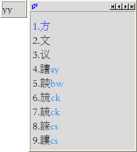
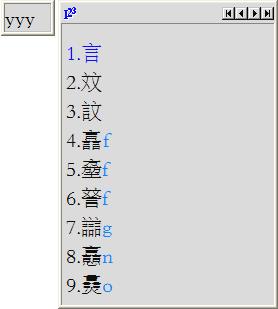
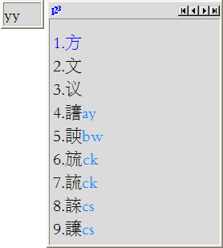
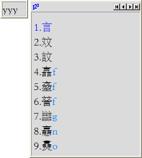
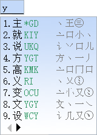

极点五笔输入法完整更新历史：https://xbeta.info/freewb-history.htm[v1.0-v7.2内测版（2012-01-16）]
本人经过2个多月将Unicode 11.0.0全部汉字由五笔吧小吧主LSJ天道酬勤制作的86版海峰五笔编码转为新世纪版编码，但本人也是新世纪版新手，能力有限，难免疏忽和错误。即日起征新世纪版用户对超大字符集编码查错。
CJK前20902字和CJK-A使用王码五笔大一统2018高级版单字“首选”编码，并作为新增字符编码参考依据。
每1000字大约需时0.5～1.5小时。无论水平高低，均可认领。新手可借此熟悉字根位置、拆字规则；高手就权当做公益吧:)
欢迎各位踊跃参与，希望能在2019年1月1日之前共同完成这一“功在当代，利在千秋”的工作。
以1000字为认领单位，我已将待校区分为70个包，具体请看：https://cnman.github.io/unicodecjk-wubi06.html
极点五笔7.15十周年纪念版
https://cnman.github.io/uploads/jpsetup10th.zip
SHA1:
78f638a90aba750f884bbfc6d905d210e79c1c16 *jpsetup10th.zip
60c0e732e676df457ab25f58b372c055b403bc5e *setup10th.exe
极点五笔7.2内测版（2012-01-16）
https://cnman.github.io/uploads/freeime_2012.01.16.zip
SHA1:
bd24fb752b147ebcc88cda5f803f62fcfda22153 *freeime_2012.01.16.zip
7e1bb5417f94c9bb63b5c8200f7db430eafd8698 *freeime.ime
292f2b86b20d2ead38945c54cd985c91a6e46110 *freeime64.ime
使用方法：将下载的升级包解压到极点安装目录，覆盖同名文件。在极点没有使用的情况下运行registry.exe进行升级即可。
极点五笔－新世纪版超大字符集码表：
CNMan_UnicodeCJK-WuBi06-Tables_JiDian.zip
不定时与码表主库同步，请及时更新。
使用方法：
1、下载并安装超大字符集字体中华书局宋体；下载SurrogateFallback.reg导入注册表；并重启计算机。
http://www.ancientbooks.cn/helpcore?font
https://github.com/CNMan/UnicodeCJK-WuBi06-Tables/raw/master/tmp/regedit/SurrogateFallback.reg
2、把CNMan_UnicodeCJK-WuBi06-Tables_JiDian.zip中的cnman目录解压到极点码表目录（如C:\Program Files\freeime\mb\）中。
3、极点状态栏右键，管理工具-->切换词库-->选cnman。
4、极点状态栏右键，输入法设置-->图形设置模式，打开“极点设置”工具，界面设置-->候选窗界面-->更改字体：字体“中华书局宋体00平面”，字形“常规”，大小“四号”或“14”以上。

 




跟王码五笔字型大一统2018高级版对比一下：

